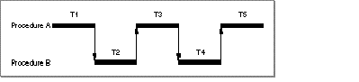

SYNTAX PrintProff program [-c] [-h | -f] [-p] [>outputFile] DESCRIPTION The PrintProff tool prints an analysis of the .proff data file generated when you run a program that has Proff library code merged into its resident code segment. The Proff library code file, Proff.o, is contained in {MPW}Libraries:Libraries directory. Proff.o contains the code that gathers profiling and performance monitoring information for a program that ran with Proff code temporarily embedded. Proff monitors only routines built specifically with profiling options on or compiler directives embedded. Profiling and performance monitoring are two different report criteria for the program. Profiling is the dynamic recording, for every routine call, of the identity of the called routine and the statement that called it. Performance monitoring, in the context of profiling, is a recording of the time spent executing code in each routine. Both the performance and profiling measurements that PrintProff reports are in terms of arcs. An arc is defined to be an execution of a procedure from a specific call site. In other words, an arc is the flow of control from a specific call site through the routine's code execution and then back to the statement following the routine call. For example, if Procedure A calls Procedure B, then the arc occurs when control leaves Procedure A and goes to Procedure B where the code of Procedure B is executed before finally returning control to Procedure A. This is shown below. Flow of control diagram  The performance and profiling measurements that PrintProff reports include • the number of times the arc executed • the cumulative flat time for the arc Flat time doesn't include the segment loading or profiling time overhead, but it does include some performance monitoring and routine call overhead for any routine called directly by the procedure. Note that if a routine called by another routine was not built with profiling options or compiler directives, then Proff will record its execution time as if it was actually a part of the calling routine. • the cumulative hierarchical time for the arc Hierarchical time is the amount of time spent in the called routine plus time spent in any routines called by it before control returns to its caller. Hierarchical time does not include the segment loading or profiling overhead for the current routine. However, this overhead for called routines is included in the hierarchical time. • the segment number for calls made across segments
When you run a program you built for performance monitoring, the profiling data Proff generates goes in the file program.proff.
Note The PrintProff command uses the program.proff file and the program.sym file (generated by building your program with the Link tool's -sym full option and the correct compiler directives for your code language) as input. The report that PrintProff generates • is sorted by the total hierarchical time (-h) or total flat time (-f) in microseconds. • includes percentage values for each routine's hierarchical and flat time. If recursion is present, the percentage values are misleading. If recursion is not present and if all routines are monitored, then the largest hierarchical time is that of the last caller, and is exactly equal to the sum of the flat times. • shows each routine's time as a percentage of the most hierarchically expensive routine's time with the hierarchical sort (-h). • shows each routine's time as a percentage of the sum of the flat times with the flat sort (-f). • includes a list of the routines it calls (-c). This makes it easier to follow the call chain, account for hierarchical time, and view the program's segmentation.
To set up your program for Proff monitoring, you must compile it with specific compiler options and directives, as well as including Proff.o in the link. (The last example in the "Examples" section of the Link command shows how to link your program for profiling performance monitoring.) The compiler options to enable performance monitoring for C and C++ are -trace on or #pragma trace on and #pragma trace off inserted in the code to indicate the parts to be monitored.
Note INPUT The program.proff and program.sym files. The program.proff file is generated when you run the program into which you merged the single standalone segment of the Proff library, ProffSeg, using the -sn option of Link. The program.sym file is produced when you link the program that you built using the -sym full option and the correct compiler directives for your code language as input. (See the Link command and the "Description" section.) The input files, program.proff and program.sym, must both be in the same directory. If they are not in the current directory, you must specify a pathname with the target program's terminal name at the end. OUTPUT Sends a performance report to standard output unless you redirect it to a specified output file. ALIAS RESOLUTION This command resolves Finder aliases in all input and output file specifications. STATUS
PrintProff
can return the following status codes:
PARAMETERS program Specifies the program to be monitored. If program.proff and program.sym are in the current directory, program is just the target program's terminal name. OPTIONS -c Adds a list of the routines called by each monitored routine to the PrintProff report. -h | -f Sorts the PrintProff report data by total hierarchical time (-h) or total flat time (-f). Total hierarchical time (-h) is the default. -p Displays progress messages during processing if it is used with any other parameter. If -p is the only parameter on the command line, PrintProff displays its version number and terminates. EXAMPLES The command line PrintProff -h -c Skeleton generates the report monitoring the Background routine of the Skeleton sample program. The report, shown below, is sorted by total hierarchical time and shows a list of the called routines.
Background
Total Time: 3,614,659 H 1,786,999 F/233
(35.239%H/17.421%F)
Called by Procs:
2 SkelMain.(7)
3,614,659 H 1,786,999 F/233
3/TransSkel -> 1/Main
Calls Procs:
The numbers given for hierarchical times (H) and flat times (F) represent the total time for all executions of the arc. If the flat time is followed by a slash and a number; the integer following the slash specifies the number of executions of the arc. Entries like 3/TransSkel -> 1/Main signify an intersegment call. The information is the number and name of the calling and called segment. The number preceding the name of a routine listed in the "Called by Procs" and "Call Procs" sections is an index of that routine's ranking in the overall sort of monitored routines. The time given for a routine listed in the "Call Procs" section is the total time for the arc for the routine called from the monitored routine. This value is not the total time for the called routine unless the monitored routine is its only caller. If the same routine is listed twice in the "Calls Procs" section, this shows that it was called from two different locations in the monitored routine. SEE ALSO
|